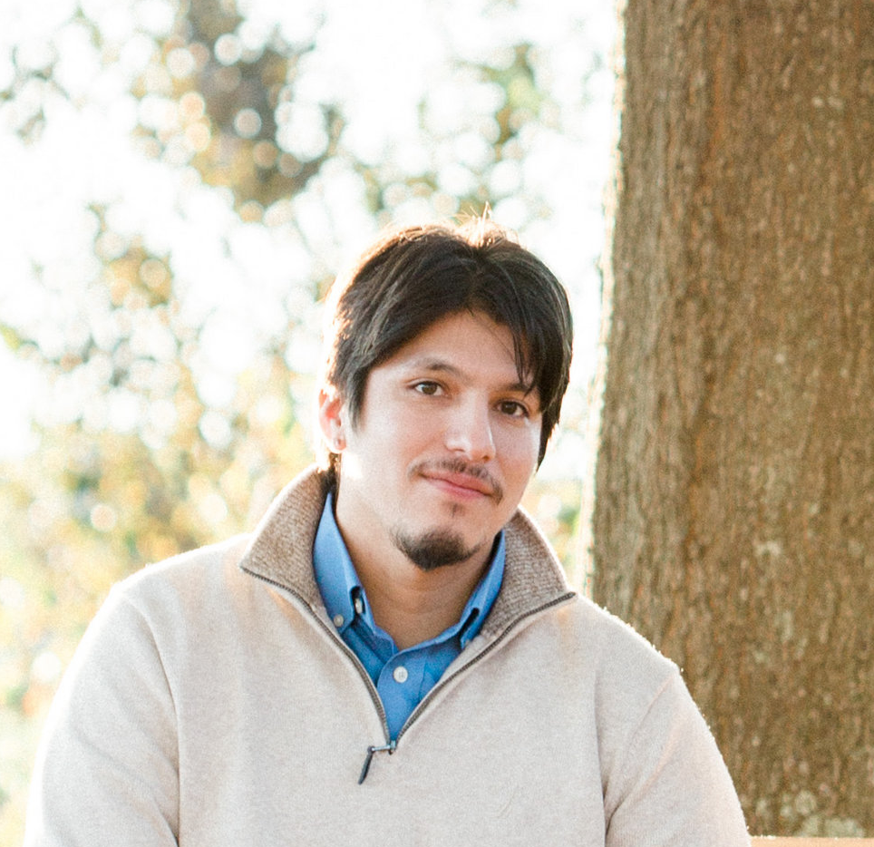

The RTP Errand Service was founded by Wolfgang E. Sanyer in 2016. Wolfgang is a graduate
of NC State University and an aspiring entrepreneur - his dream is to one day open a
brewery in the Raleigh-Durham area. As a step towards that goal, he has founded this
business. He was inspired by a comment his fiance made one day late at night while they
were watching TV: "I really wish people delivered dessert. I would totally pay someone to
deliver me some dessert right now..."